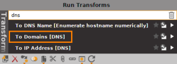
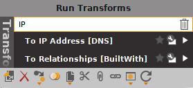
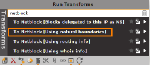
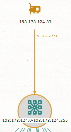
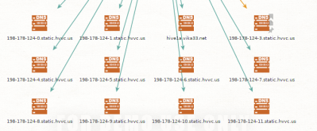
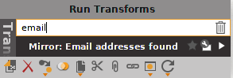
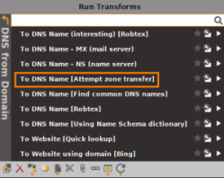
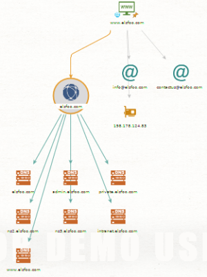

examples
•
To Domains(DNS) → extract all the domains from a DNS name
 •
To IP address(DNS) → resolves a DNS name to an IP address using DNS
 ◇
To Netblock (using natural boundaries) → to find netblocks associated with an IP address
  ▪
To DNS names in netblock(reverse DNS) → To find all the DNS listed in this netblock
•
Mirror: Email address found → perform a google dork query that return the email addresses found on the website
 •
Domain to DNS name(attempt of Zone Transfer)  